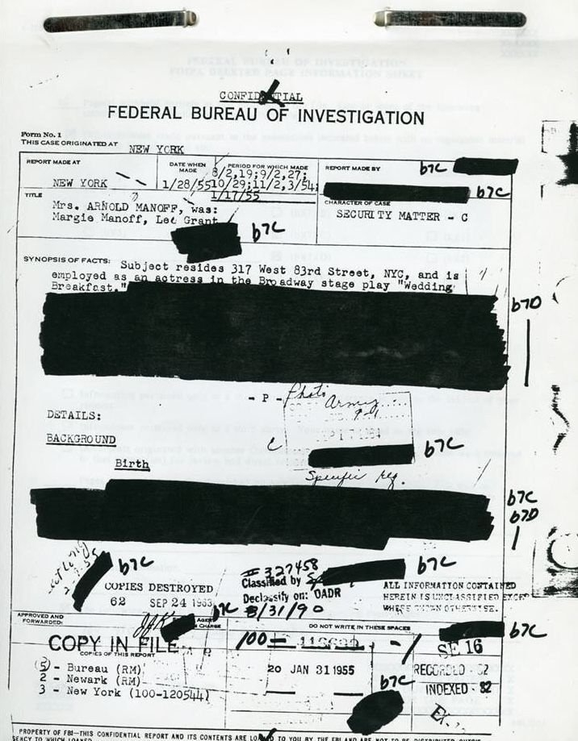
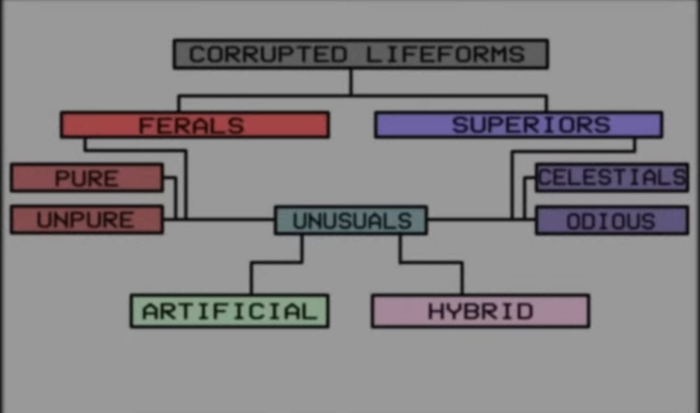
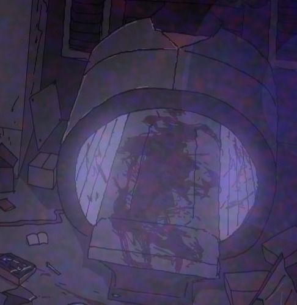
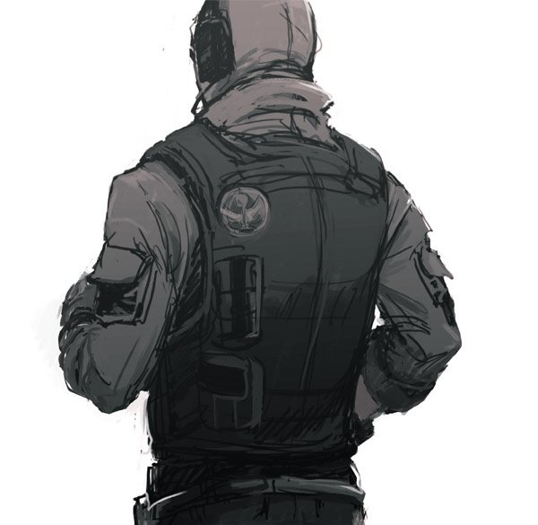
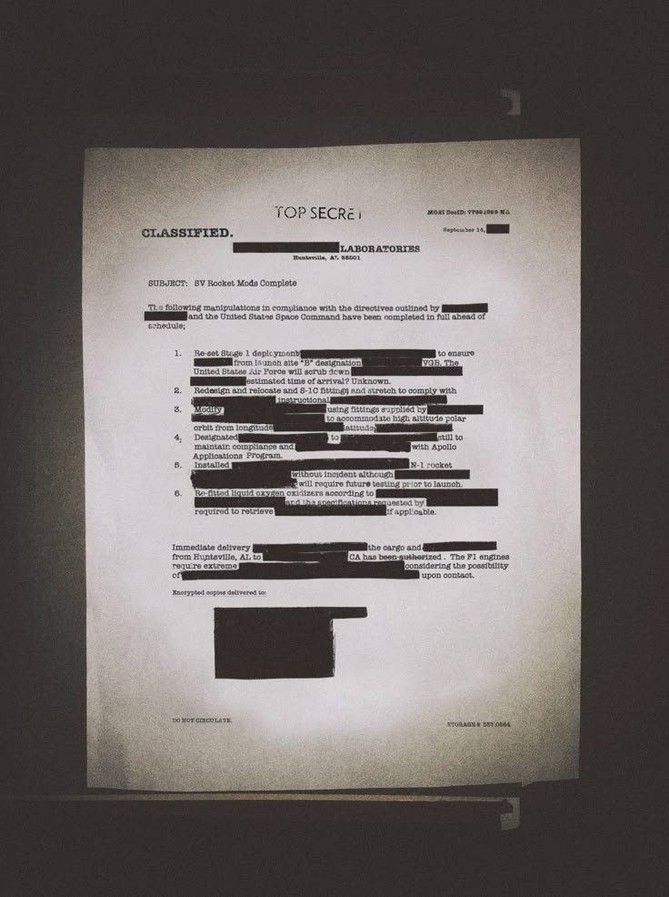
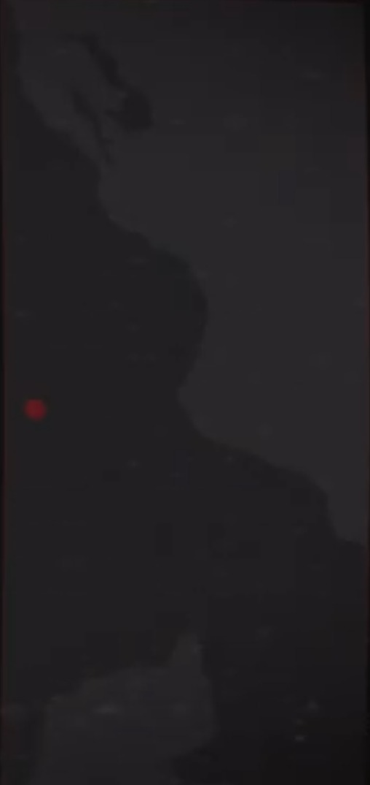
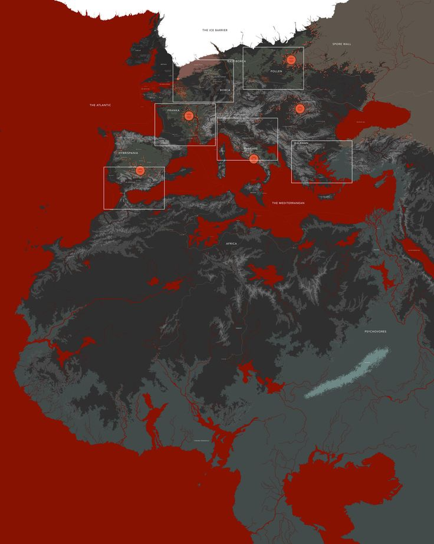
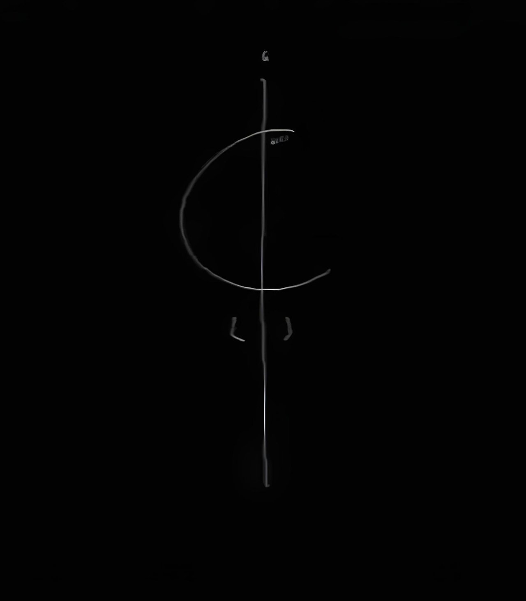
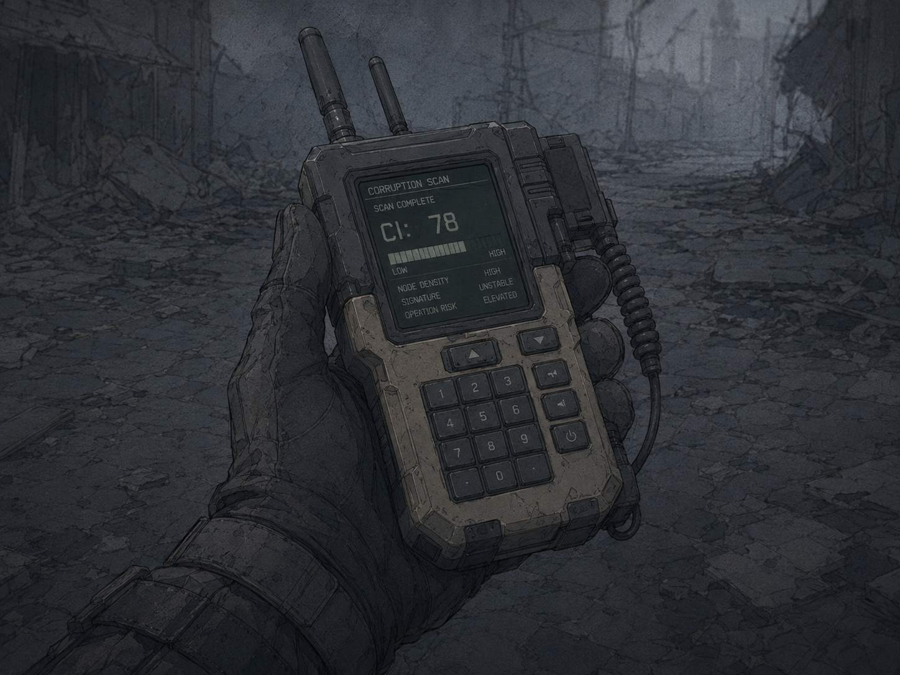
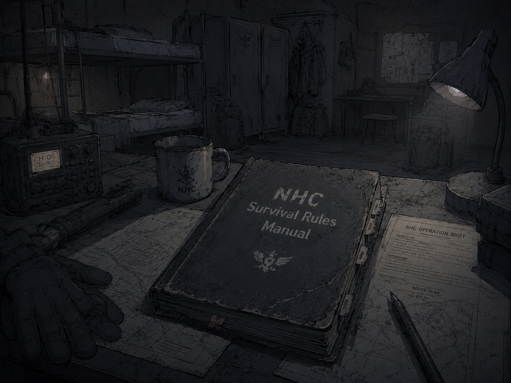

ARCHIVE FLOOR
ANALOG DOCUMENT FLOOR
RELAY SORTER / PAPER INDEX TABLE / MAGNETIC RECORD ACCESS
Faction_860403
ORIGIN: 주요 세력 기록서
주요 세력 기록서 본 문서는 Project Curse 세계관 내에서 활동하는 주요 기관, 적성 세력, 비인가 무장 조직, 연구 기업, 회수 부대, 민간 통제 조직의 역할과 관계를 정리한 세력 기록서이다. 해당 기록은 도시 이상현상, 괴이 출현...
Personnel_890617
ORIGIN: 인물 프로필 기록
인물 프로필 기록 Character Profile Archive 본 문서는 Project Curse 세계관 내 주요 인물, 특수 작전 인원, 고위험 개체화 가능 인물, 사건 관련자를 정리한 인물 기록이다 본 기록은 각 인물의 소속, 상태, 능력, 관련 사건, 위험도, 장비 정보를 포함하며, 일부...

Ferals_860722
ORIGIN: 타락 개체 분류 보고서
타락 개체 분류 보고서 Feral Entity Classification Report 현재 보시는 정보는 관계자 외 열람이 불가능한 정보입니다 이는 관련 담당자와 함께 확인해주시기 바랍니다 본 문서는 Project Curse 세계관 내에서 확...

Cults_871104
ORIGIN: F.H.C 극비 보안 문서
F.H.C 극비 보안 문서 F.H.C Classified Security Document 경고 본 정보에 포함된 내용은 F.H.C 극비 분석 부서에서 독점 관리 중인 기밀 자료입니다 해당 정보에는 다수의 기밀 내용과 오컬트 위협 사례가 포함되...

Sakuma Tape_991028
ORIGIN: 사쿠마 유타 실종 사건 보고서
사쿠마 유타 실종 사건 보고서 Sakuma Yuta Disappearance Case Report 주의⚠️ 본 자료는 S.I.D 오컬트 부서의 기밀 내용으로 분류되어 있으며, 열람 시 담당 관계자와 동행하여 확인해야 한다 해당 문서는 S.I....
Unknown Record1_860204
ORIGIN: 아마리온 회수 영상 기록
아마리온 회수 영상 기록 Recovered Amarion Training Footage 본 문서는 F.H.C 극비 분석 부서가 회수한 아마리온 제약 내부 사전교육 영상의 복구 기록이다 해당 영상은 표면적으로는 인류의 미래와 자원 확보를 위한 ...
Unknown Record2_860205
ORIGIN: 피의 호수 부검 기록
피의 호수 부검 기록 Blood Lake Autopsy Record U.A.C 오컬트 생명 과학 부서 녹음파일#088 19xx/xx/02 지역:아오██하라 관련 개체: 피의 호수 / Blood Lake 피해자:현장 촬영팀 - 마렌 예거트 기록 형태:부검 녹음파일 / 법의학 기록 / 생체 이상 분...

Unknown Record3_920711
ORIGIN: 레드울프 이탈 기록
레드울프 이탈 기록 Red Wolf Defection Record 본 문서는 U.A.C 정보 수집 부서가 복구한 암호화 CCTV 영상 기록이다 해당 기록은 과거 N.H.C 1차 작전팀 : 레드울프 가 기존 지휘 체계에서 이탈하는 과정과, 이후 신디케이트 주요팀으로 재분류되는 계기가 된 내부 대화...

Unknown Record4_930314
ORIGIN: 축복으로 위장된 병기
축복으로 위장된 병기 Weapon Disguised as Blessing 본 문서는 U.A.C 정보 수집 부서가 복구한 비인가 오디오 기록이다 해당 기록에는 과거 N.H.C 1차 작전팀 : 레드울프 소속이었던 웨이드 밀렌이 우시노다 의 힘을 병기화하려는 계획을 논의한 정황이 포함되어 있다 본 기...

Immortality_860201
ORIGIN: 불멸을 향해
불멸을 향해 Blood Lake Incident File 독일 본토 ██ 지역에서 이상현상 감지됨 XX 정찰 부대에 의해 최초 발견 이 문서는 독일 본토 ██ 지역에서 발생한 피의 호수 관련 이상현상과, 현장 촬영 및 통신 임무를 수행하던 유...

Zone_870815
ORIGIN: 구역 위험도 분류 문서
ATTACHED IMAGE // 548f1c4456dc.jpg 구역 위험도 분류 문서 Zone Hazard Classification Document 기본 기록 본 문서는 U.A.C 공식 기준 문서이다.Project Curse 세계관 내 도시 및 외곽 지역에서 발생하는 이상현상, 괴이 출현, 우...

Unknown Record5_940626
ORIGIN: 새로운 세계를 위한 유전자 기록
새로운 세계를 위한 유전자 기록 Genetic Record for the New World 본 문서는 정체불명의 작성자가 남긴 비인가 유전자 연구 기록이다 해당 기록은 괴이로 변이한 생명체의 조직에서 추출된 유전 정보를 기반으로 작성된 것으로 추정되며, 괴이 유전자 디지털화, 생체 프린팅, 강제...
Timeline_860101
ORIGIN: Project Curse 연표 기록
Project Curse 연표 기록 Project Curse Timeline Archive 본 문서는 Project Curse 세계관 내에서 발생한 주요 사건, 조직 창설, 이상현상 기록, 실종 사건, 연구 자료, 작전 기록을 시간 순서대로 ...

Redzone_881120
ORIGIN: 레드존 이상현상 및 오염 기준 문서
Red Zone Anomaly & Contamination System ◆ 분류: 레드존 이상현상, 오염 지수, 시간 오염, 문 현상, 통신 오염 ▣ 중심 기관: U.A.C / N.H.C / S.I.D / F.H.C ⟐ 기능: 레드존 에서 발생하는 비정상 현상과 오염 기준을 한 문서 안에서 판정...

FCR Archive_890402
ORIGIN: 괴이·우시노다교·귀환자 분류 문서
Feral , Cult & Returned Entity Classification ◆ 분류: 괴이 개체, 인공 괴이, 우시노다교 , 의식 집행자, 귀환 민간인 ▣ 중심 기관: N.H.C / F.H.C / S.I.D / C.P.D ⟐ 기능: 사람처럼 보이거나 생물처럼 움직이는 위험 대상을 구분한다...

NHC Manual_891219
ORIGIN: N.H.C 현장 작전·장비·봉쇄 규정 문서
N.H.C Field Protocol, Equipment & Containment Manual ◆ 분류: N.H.C 현장 규칙, 회수 금지 기준, 장비, 시설, 차량, 봉쇄 코드 ▣ 중심 기관: N.H.C / Ash Crew / A.R.F / C.P.D / U.A.C ⟐ 기능: 레드존 현장에서 ...
